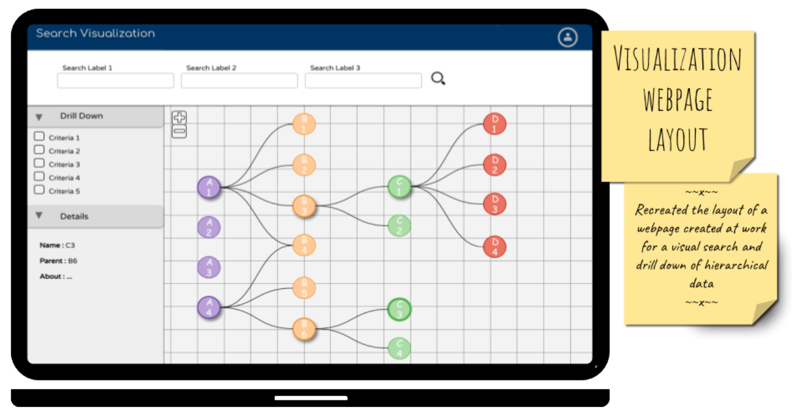

Search Dashboards

Tech?
Angular, HTML, Javascript, CSS3, Bootstrap
What?
This project aimed at creating an application that can provide different ways of searching, creating, updating and deleting an artifact within the firm.
How?
Three types of search methods -- Relational search, Quick Search, Deep Search were built on top of the same dataset to cater to different audiances. The access to certain features were managed by user entiitlement.
When?
June 2015 - May 2016
What I did?
My role included developing the entire UI and integrating the front-end to the back end. I also built REST APIs to fetch data from the database. I established connectivity between UI and different 3rd party tools.

Tech?
Neo4j, D3.js, Angular, HTML, Javascript, CSS3, Bootstrap
What?
Hierarchical data with multiple parent multiple child relationship is not easy to interpretwithout thorough understanding of the data. This project aimed at giving the user a visual representation of the data in order to understand it better.
How?
An initial search criteria is used to identify the data to be visualized. By modifying existing plugins in D3.js a plugin was created to show linkages between paret and child nodes.
When?
April 2016 - November 2017
What I did?
My role included developing the search UI and designing the visualization using D3.js. Search and Visualization went over multiple iterations based on user feedback. The first prototype went live in a short span of one month.